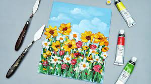

Oil Painting
Oil paintings are one of the oldest forms of painting and remain one of the most popular painting medium types to this day. When painting in oils it’s easy to blend colours, but can be difficult to erase mistakes meaning it can be a difficult medium to master. Some of the world’s most famous paintings were painted in oils, with portraits being a particular speciality of many artists who work in this medium.
Watercolour
Watercolour paints tend to be inexpensive to purchase but, similar to oil paints, difficult to master. Paints are diluted with water meaning they can go a long way from a single tube, but once the paints are on the canvas there is little that can be done to correct mistakes. Watercolour paintings work beautifully with light and are often used to paint landscapes.
Acrylic
Only dating back to 1940, acrylic is a relatively new painting medium. It dries quickly, is versatile, and can be very durable. If you make a mistake using acrylic paints you can even scrape them off if you act quickly. Many pop artists used acrylic in their works, with the famous Campbell Soup Can a particular example of acrylic art.

Gouache
Gouache is a form of watercolour which has been modified to be opaque which differentiates it from more traditional watercolour paints. As a painting medium, it dries quickly and dries to a slightly different colour than when it was wet. Many commercial artists work in gouache, as it is vibrant and can block out colours quickly.